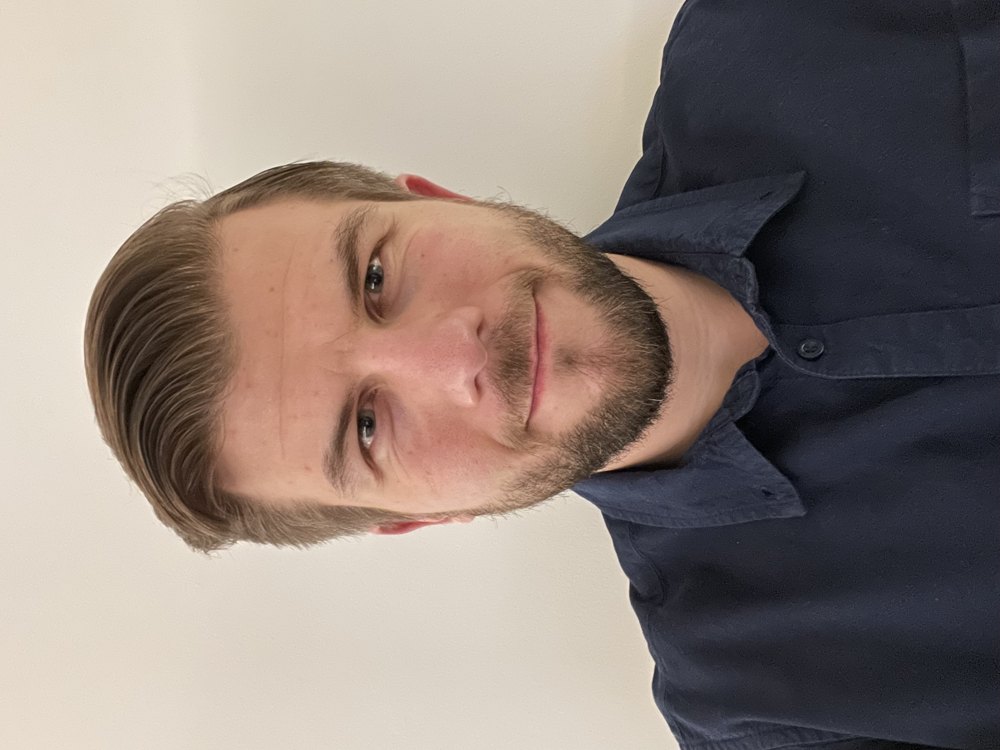

Systems Engineer & Researcher · MIT
Building pragmatic pathways for Model-Based Systems Engineering adoption. Teaching digital thread at MIT. Making complex systems engineering accessible for small and medium-sized organizations.

I am a Systems Engineer and Researcher pursuing a Master of Science at the Massachusetts Institute of Technology (MIT), where I also serve as a Teaching Assistant for the graduate course Model-Based Engineering in the Product Development Lifecycle.
My research focuses on MBSE Adoption Pathways for Small and Medium-Sized Organizations — a topic I'm passionate about because I believe the most powerful engineering tools should be accessible beyond large enterprises. I'm also currently teaching a graduate-level class on the Digital Thread at MIT.
With over a decade of hands-on industry experience at Rommelag — spanning automation engineering, software development, and senior engineering leadership — I bring a deeply pragmatic view to systems thinking. I'm fluent in Polish, English, and German.
Open to collaboration, speaking opportunities, and research discussions on MBSE & digital thread.